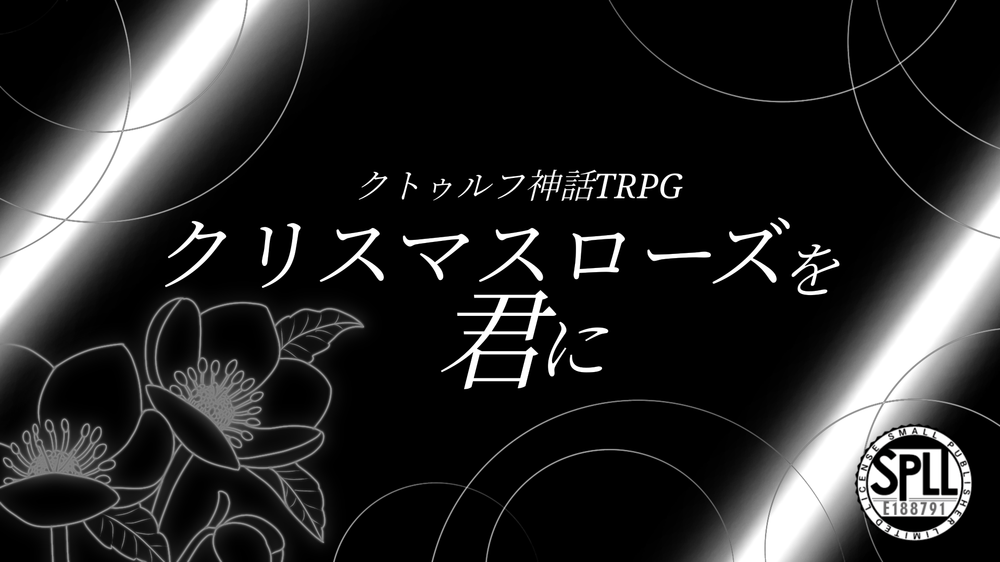

作品紹介
異世界転生 × 猫耳少女 × 文学
誰もが一度は夢見た、異世界で美少女とキャッキャウフフな体験が、この一作で味わえる！
可愛すぎる猫耳少女『フィーネ』と一緒に異世界を冒険する王道ストーリー
ただし、その先に待ち受けている衝撃の事実に、誰もが目を見開く
タイマン形式だからサクっと遊べて、すけろく氏がデザインを手がけた美少女と楽しく異世界観光を楽しめます。
※本作はクトゥルフ神話TRPG第6版向けの作品です。シナリオのあらすじやプレイ情報など、詳細は配布ページをご確認ください。
作品情報
- システム：クトゥルフ神話TRPG 第6版
- 配布・頒布先：BOOTH
- プレイ人数：1人
- 推定プレイ時間：4～5時間
- 舞台：現代日本 → 異世界
- 推奨技能：3大探索技能、回避
- 準推奨技能：戦闘技能
- 推奨探索者：低すぎないステータス
- ロスト率：低 (捉え方によっては高)
- 新規探索者限定BOOTHで作品を見る ↗
#クロ君